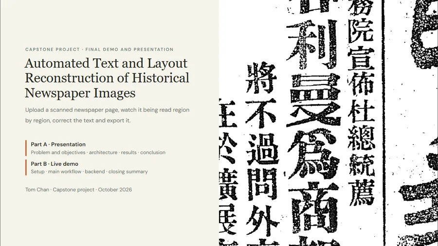
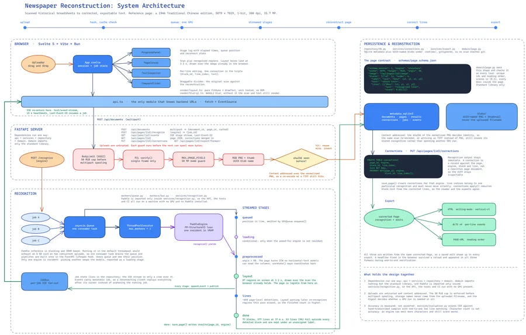

Tom Chan
I build software that turns scanned documents into text people can search and correct.
Hi, I'm Tom. My most recent project is a master's capstone: a web workbench that reads scanned 1946 Chinese newspaper pages on one GPU. It draws a page's layout within about four seconds. An archivist can then fix any line in the browser and export the page as ALTO or PAGE-XML, the formats libraries use.
The case study gives the measurements, including the accuracy target the project missed and the reason.
Projects
Deliverables

The 18-slide deck from the final demo: problem, architecture, results and the live-demo walkthrough. Click a slide or use the arrow keys to move through it.


How the browser, the FastAPI server, the GPU worker and the database fit together, including the upload checks and the streamed stages.

Speed and accuracy on the 1946 page, plus API stalls that only showed up in an end-to-end run.
Skills
| Area | Tools | Where I used them |
|---|---|---|
| Back end | Python 3.13 FastAPI asyncio SQLite Pydantic | Upload guards, a job queue in front of one GPU, and an event stream that a browser can reconnect to after a reload |
| Front end | Svelte 5 TypeScript Vite Canvas | A workbench that draws layout regions over a 35-megapixel scan as each recognition stage arrives |
| Document AI | PaddleOCR PP-StructureV3 ALTO v4 PAGE-XML | Running a one-shot recognition pipeline stage by stage, and reading order for vertical Chinese |
| Quality | pytest bun test coverage uv Git | 13 back-end and 5 front-end tests, 85% statement coverage, and a fake engine so the suite runs without a GPU |
| Evaluation | CER IoU matching Heuristic review | Character error rate against reference lines, timing over HTTP, and a usability review against Nielsen's heuristics |